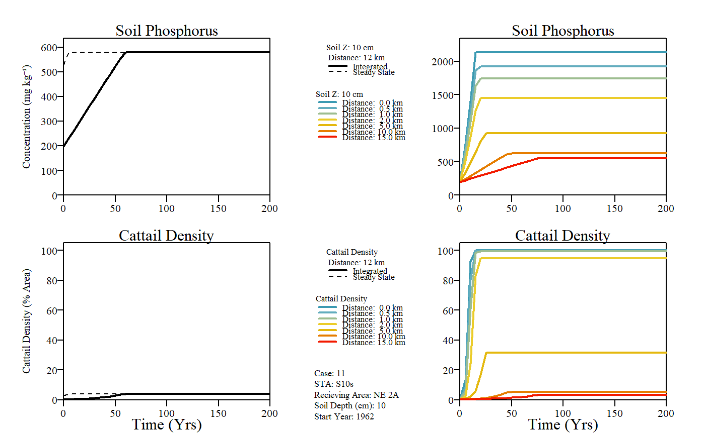

This function runs the EPGM model over a simulated period. The model is based primarily upon data collected in the early 1990's along the phosphorus gradient in WCA-2A. Substantial additional data collected since then in WCA-2A and other locations indicate a need to recalibrate the model and potentially revise its structure. Recent data suggest, for example, that the relationship between cattail density and soil P needs recalibration and that actual soil P thresholds for biological impacts are probably lower than reflected in the original calibrations. There are also issues relating to interpretation of and potential anomalies in the historical soil P calibration data attributed to variations in soil core collection method and definition of the soil/water interface (inclusion vs. exclusion of floc layer). There are also indications in the recent data of biologically-mediated vertical transport and/or mixing that are not reflected in the current model structure.
EPGMTime( case.no = NA, Start.Discharge = NA, STA.outflow.TPconc = NA, STA.outflow.vol = NA, FlowPath.width = NA, Hydroperiod = NA, Soil.Depth = NA, Soil.BulkDensity.initial = NA, Soil.TPConc.initial = NA, Vertical.SoilTPGradient.initial = NA, Soil.BulkDensity.final = NA, PSettlingRate = NA, P.AtmoDep = NA, Rainfall = NA, ET = NA, Dist.Display = 12, Dist.slice = c(0, 0.5, 1, 2, 5, 10), Max.Yrs = 200, Max.Dist = 15, Time.increment.yr = 5, Dist.increment.km = 0.1, plot.profile = TRUE, raw.time.output = FALSE, results.time.table = TRUE )
| case.no | Case number from the pre-loaded example data (values ranges from 1 to 12) |
|---|---|
| Start.Discharge | The year which this particular STA began discharge operations. |
| STA.outflow.TPconc | Outflow total phosphorus concentration (in ug L-1; micrograms per liter) for this STA. |
| STA.outflow.vol | Annual outflow discharge volume (in x1000 Acre-Feet Year-1) for this STA. |
| FlowPath.width | The width of the downstream flow path (in kilometers). |
| Hydroperiod | Average hydroperiod (time above ground surface) of the downstream system (in percent). |
| Soil.Depth | Depth of soil (in centimeters). |
| Soil.BulkDensity.initial | The initial bulk density prior to dicharge of the soil downstream of the system (in g cm-3). |
| Soil.TPConc.initial | The initial total phosphorus concentration of soil prior to discharge downstream of the system (in mg kg-1). |
| Vertical.SoilTPGradient.initial | The soil total phosphorus concentration gradient prior to dischage downstream of the system (in mg cm-3 cm-1). |
| Soil.BulkDensity.final | The final bulk density after dischage of the soil downstream of the system (in g cm-3). |
| PSettlingRate | The phosphorus settling rate estimated from steady-state conditions (m Year-1). |
| P.AtmoDep | Phosphorus atmospheric depostition loading rate (in mg m-2 Year-1). |
| Rainfall | Annual accumulated rainfall estimate (m Year-1). |
| ET | Annual evapotranspiration estimate (m Year-1). |
| Dist.Display | Output display result for this distance |
| Dist.slice | A list of distances to disply parameters in a time series plot if |
| Max.Yrs | Maximum number of years simulated |
| Max.Dist | Maximum ditance plotted, default is 50 km |
| Time.increment.yr | Year increment to be modeled |
| Dist.increment.km | Distance increment modeled |
| plot.profile | If |
| raw.time.output | If |
| results.time.table | If |
This function computes and plots the distance profile along the gradient based on input values
As described in the original documentation, the model is designed to simulate marsh enrichment (responses to increasing P load), not recovery (responses to decreasing in load).
EPGMTime(case.no=11)#> Warning: conversion failure on 'Concentration (mg kgâ»Â¹)' in 'mbcsToSbcs': dot substituted for <e2>#> Warning: conversion failure on 'Concentration (mg kgâ»Â¹)' in 'mbcsToSbcs': dot substituted for <81>#> Warning: conversion failure on 'Concentration (mg kgâ»Â¹)' in 'mbcsToSbcs': dot substituted for <bb>#> $Time.yrs #> [1] 200 #> #> $Time.increment.yrs #> [1] 5 #> #> $Simulated.Zone #> Parameter Value #> 1 Distance.km 15.0 #> 2 Width.km 10.5 #> 3 Area.km2 157.5 #> 4 STA.outflow.volume.kAcftyr 281.3 #> 5 Hydroperiod.pct 9140.0 #> 6 Soil.Depth.cm 10.0 #> 7 P.Settle.Rate.myr 10.2 #> 8 STA.outflow.Conc.ugL 122.0 #> 9 STA.outflow.Load.mtyr 42.4 #> #> $TimeProfile #> Time.Step Year SoilP.mgkg CattailDensity.ha #> 1 0 1961 198 47 #> 2 5 1966 335 226 #> 3 10 1971 476 1603 #> 4 15 1976 622 3201 #> 5 20 1981 715 4238 #> 6 25 1986 765 4615 #> 7 30 1991 800 4755 #> 8 35 1996 826 4830 #> 9 200 2161 902 5005 #>